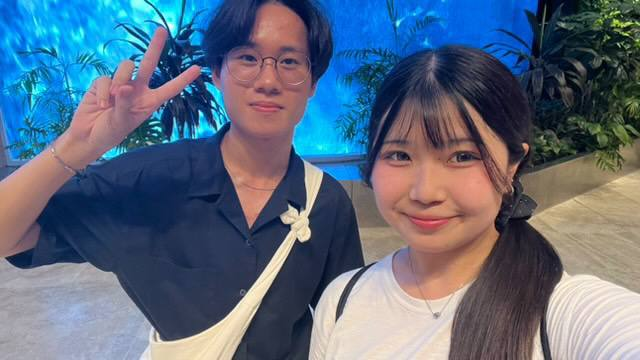

Yume
Hi Yume, I hope that you enjoyed yourself in Singapore. I am glad to be able to bring you around Singapore, even though at the start we were not that close because it was awkward and you were talking more with your friends, on the third day we got closer and we got to know each other more and I realised you are very kind! I hope that you got to know me more too from that day on. Thank you for updating me whenever you can, I appreciate it a lot and I hope that we will cross paths again, probably me meeting you in Japan haha. I wished to see you play the guitar on the stage one day in person. Continue to study hard and don't give up, let's stay in touch and we shall meet again!
Yuri
Hi Yuri, I hope that Singapore was a fun place for you and that you enjoyed yourself here. Likewise with Yume, we were not that close at the start but got closer from the beach trip onwards! I am grateful that you invited me back to bring you around Singapore even though some of your friends are not coming. Hopefully it was a fun day for you that day and was worth it. I enjoyed my time with you at the beach and bringing you around Singapore these few days. Thank you for making the atmosphere lively and happy every time when we are out. I wish you all the best in your future and hopefully we will meet again too!
Yuumi
Hi Yuumi, I hope that me bringing you around Singapore has put a smile on your face. Though we did not spend as much time together, you were really kind to me and always approaching me before leaving for somewhere which I am very grateful for. If only your trip in Singapore was longer, then I will be able to get the chance to bring you to more places and spend time together. Hopefully the next time we meet up, I will get to know you more! Thank you for calling me handsome and being your type too haha, I appreciate it. Let's stay in touch and meet one day, all the best for your studies and we shall meet again.
Chihiro
.jpg)
Hi Chihiro, hopefully Singapore was a fun and nice place for you. I still remember that on the first day, you were not feeling that well, but afterwards you got so much better and less pale. Please remember to drink lots of water when you are out with your friends, it will definitely help! Even though we did not spend as much time together as you are always either with your friends or very shy, we got to talk a little on the last day and it made me realised that you were really kind. The smile that you put on every time I do something stupid was really funny. I hope that we get to meet again soon and maybe that will be in Japan and you will be bringing me around! Stay safe and healthy and we shall meet again soon!
Rin
.jpg)
Hi Rin, I hope that you enjoyed yourself here in Singapore. Initially, I was very impressed with your english during your presentation and once I noticed that you were in my group, I immediately knew you were the first person I would go to for translation to make sure that everyone in the group understood what I said. You really do have lot of potential and I hope that you will continue working hard and go in that right direction. Even though we did not spend much time talking, I could tell you were really chill and able to lead your friends around as a leader. I saw your Instagram and your account looks really aesthetic, which reflects well on how you dress as it is always very fashionable haha. Hopefully we get to meet 1 day and you can help me dress better. See you soon and take care!